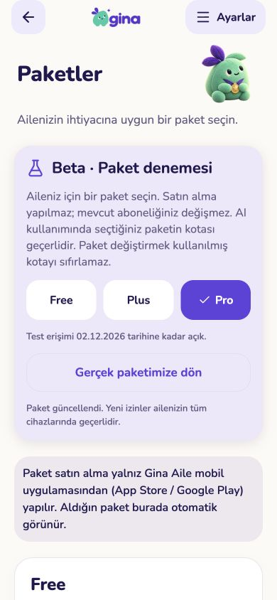
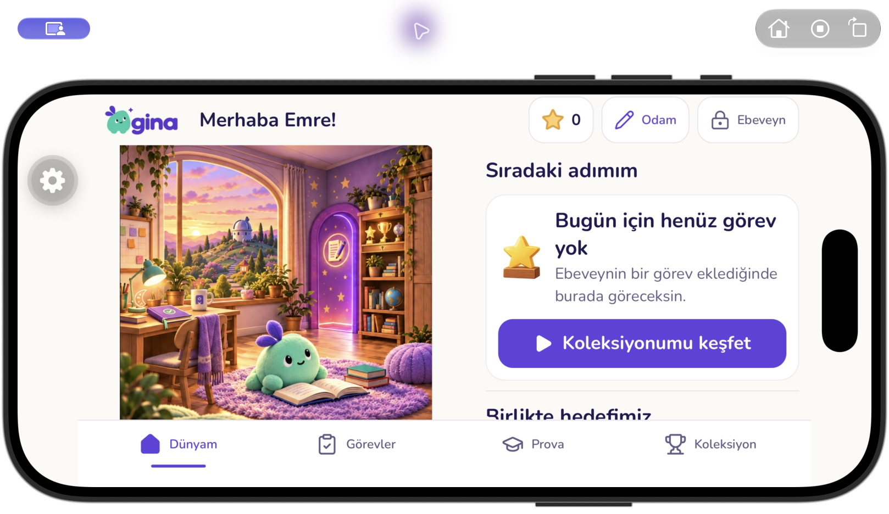
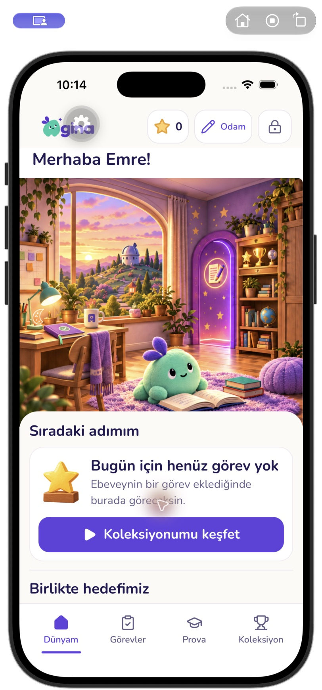
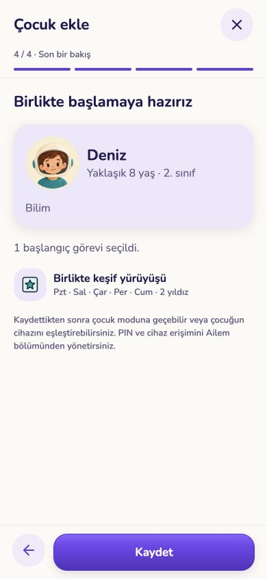
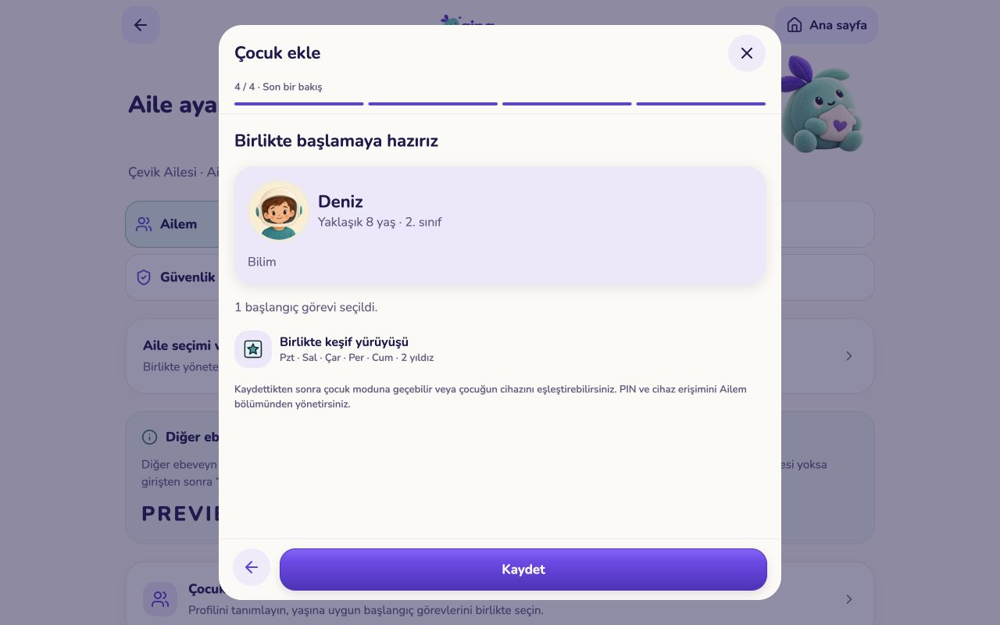
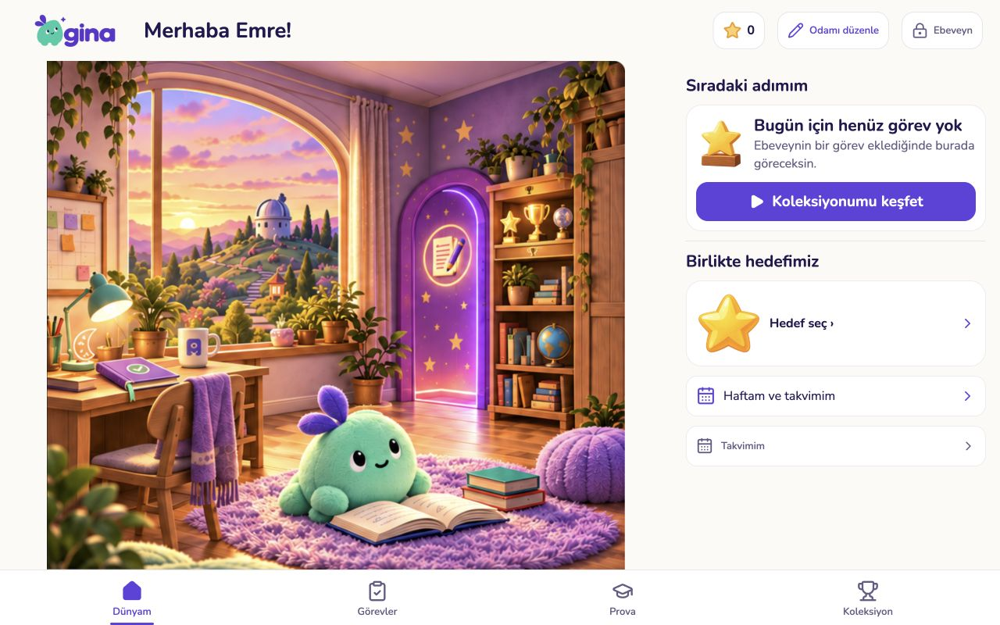
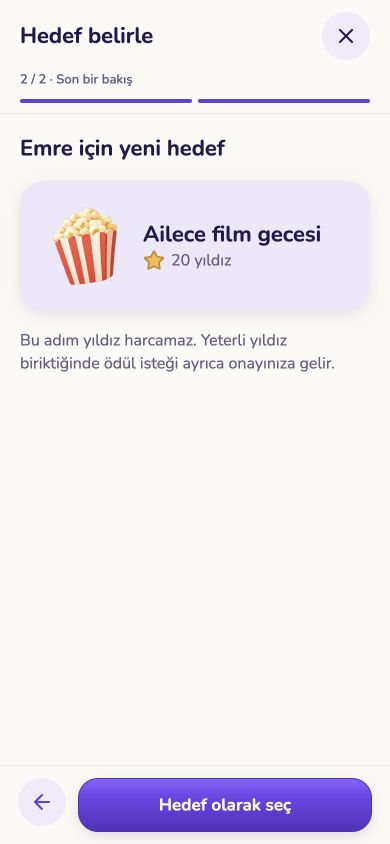
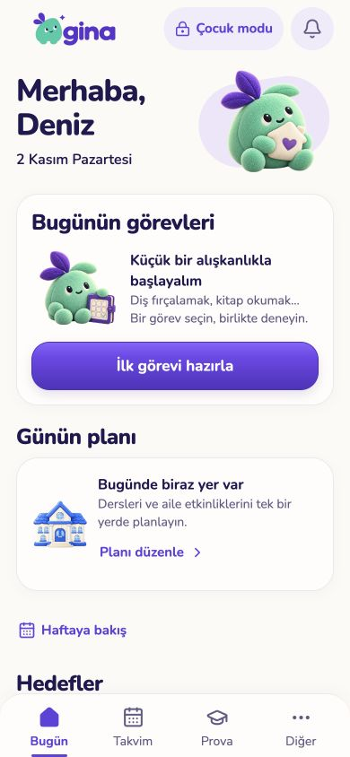
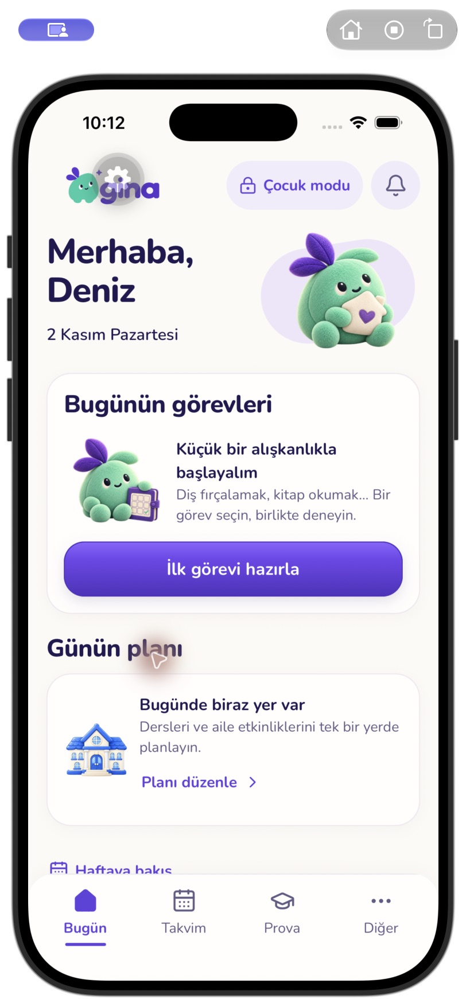
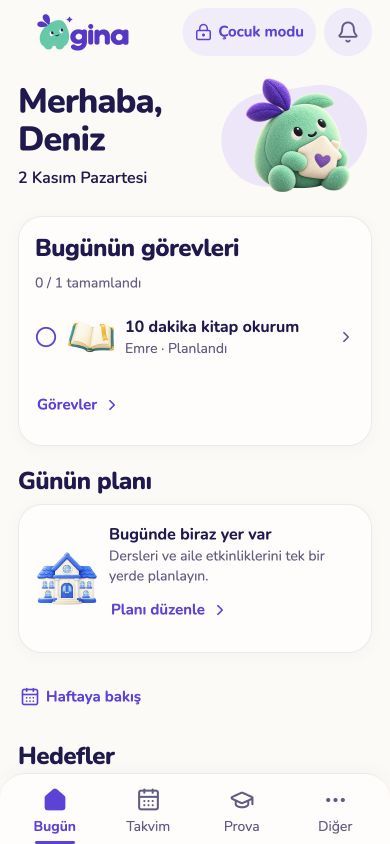
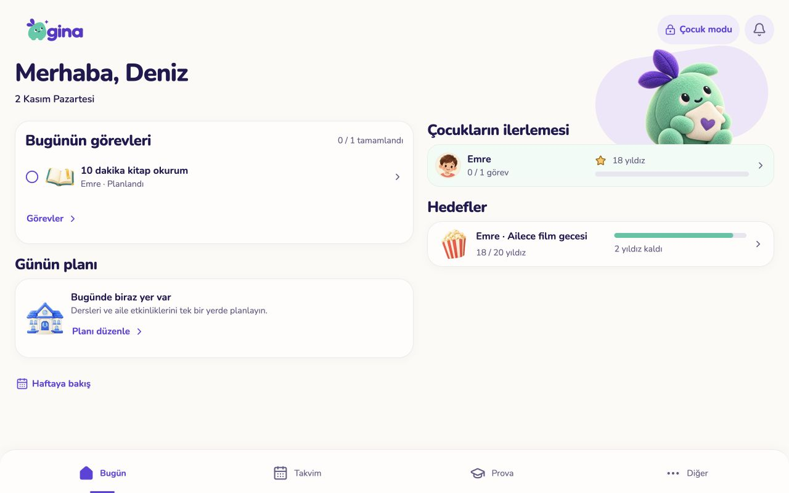
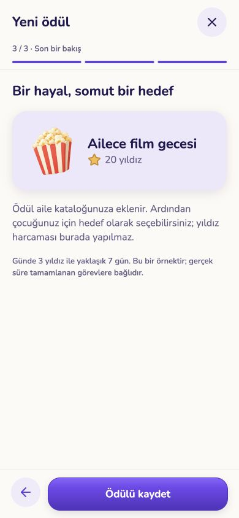
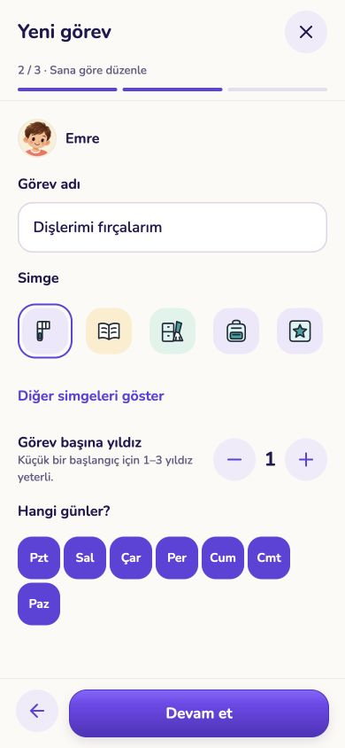
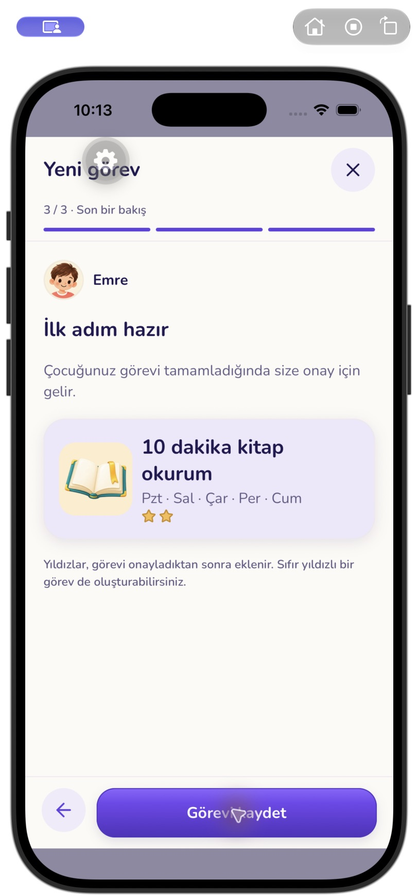
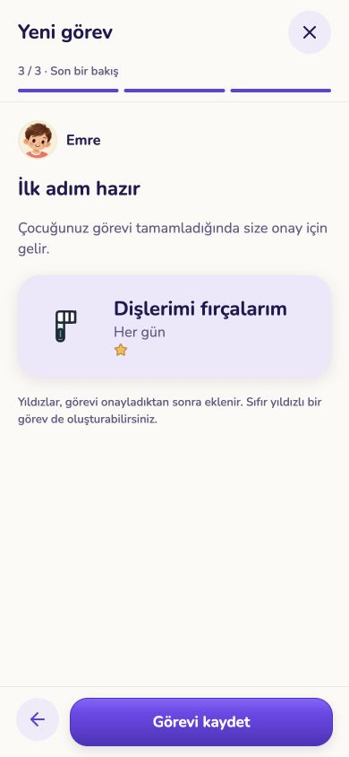
Çalışan uygulamadan ekranlar. Gerçek aile verilerine bağlanmayan örnek API; AI yanıtları yalnız akış testi içindir. Native görüntüler iPhone 17 Pro / iOS 26.5 simülatöründendir. Gri dişli geliştirme aracına aittir, TestFlight arayüzünün parçası değildir.














